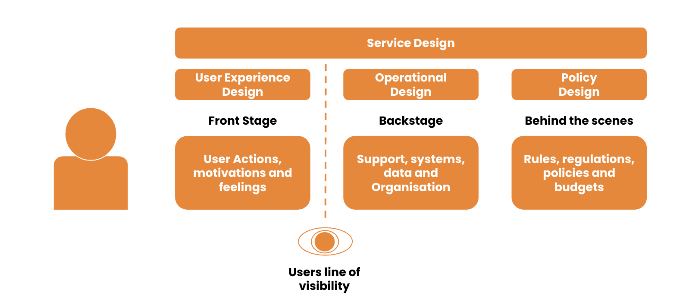
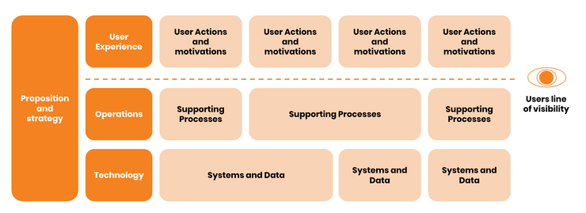
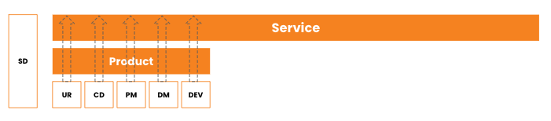
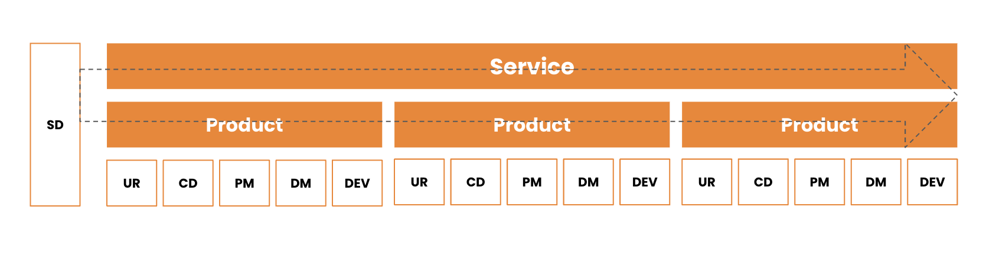

What is Service Design
Service Design is understanding, designing and delivering a holistic service experience, as it happens over time. Users have very limited line of sight to what is happening, as they should, a good service hides complexity but explains what the user needs to know and do when they need to know it.

Service Design Doing
Service design doing consists of (but not limited to):
- Research with users, look at data and understand policy
- Map 'as-is' front and backstage with experts
- Identify opportunities, design and test
- Understanding stakeholders and objectives within the organisation
- Build and deliver into live service and monitor
Service Blueprints
Service Blueprints are fashionable, they typically look like this however they are just a tool to understand complex services, they don't replace the need to overlay analytics and qualitative user research onto the process or journey.

Who 'does' Service Design
Teams concentrate on how the product can meet needs, deliver value and how the product will impact the service.

Service Design thinkers concentrate on how the service holds together across products to meet needs and deliver value. Making the products impact on the service understandable to all. However not all teams have a dedicated Service Designer, and a lot of teams don't need them, complex programmes and services often need a Service Designer, someone dedicated to ensure the end to end across products makes sense and works seamlessly, Service Design can be 'done' by any other roles, its the care and consideration of the impacts outside the immediate environment. Some of the best Service Designers I've worked with have been Technical Architects, Product Managers and Delivery Managers. Service Design can't be done alone however, it often needs someone to be a focal point to gather information from other products, understand the impacts and carry out analysis of those impacts.

A multidisciplinary team does service design, not an individual but an individual might bring it all together by talking to multiple product teams. The individual may or may not be referred to as a Service Designer.
Services, Products and other terminology
- A programme is an organisational governance structure or structures that are used to organise and manage teams to deliver an outcome although this outcome might not be a service outcome.
- A service is about the desired outcome; it's holistic and made up of a number of products
- A product is a singular thing that delivers value, it is made up of features.
- A feature is a solution within a product that adds value.